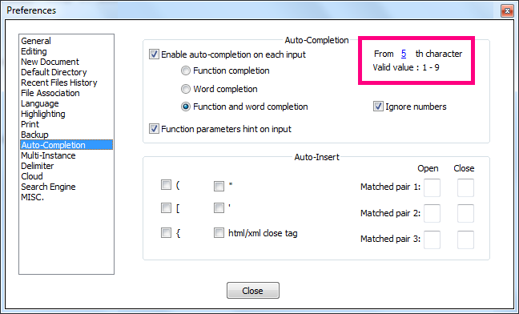

Disable automatic parens completion.
Notepad++ has this annoying built in feature where it autocompletes quotes brackets angle brackets braces parens parentheses etc.
You type " and it throws in another " right away! Stop it already!
Settings -> Preferences -> Auto-Completion
2nd grouping called "Auto-Insert", check/un-check the appropriate auto completion/inserts.
Similarly...

In the
Settings → Preferences → Auto-Completion
...area, change auto-completion on each input to be from 5th character, not from 1st character
Note there seems to be a bug in version 7.5.7 where I can't set which character it is from.
So I could only turn off auto complete.
Instead though, I've edited the config.xml file stored here:
cd $env:APPDATA
cd Notepad++
FindText auto-compl
Notepad.exe config.xml
And changed:
<GUIConfig name="auto-completion" autoCAction="3" triggerFromNbChar="1" autoCIgnoreNumbers="no" funcParams="yes" />
To
<GUIConfig name="auto-completion" autoCAction="3" triggerFromNbChar="5" autoCIgnoreNumbers="no" funcParams="yes" />